Looking for a Summer 2027 internship
Cole Matthews
Mechanical engineering student at Duke, with an aerospace certificate. I’ve built CFD models for a 160 MW AI data-center campus at ADAG Group and designed ECU test cases for Formula 1 at McLaren Applied. Next summer I want hardware work in aerospace, propulsion, thermal systems or test.
- Degree
- B.S.E. Mechanical Engineering
- Certificate
- Aerospace Engineering
- University
- Duke, Class of 2028
- This term
- UNSW Sydney, to Dec 2026
- Work authorization
- British and Canadian citizen. OPT-eligible for summer internships, no sponsorship needed.
- Cole.Matthews@duke.edu
What I’m up to right now
Updated 9 Oct 2026- StudyingSemester abroad at UNSW Sydney, until December.
- ApplyingSummer 2027 internships in aerospace, propulsion, thermal systems and hardware test.
- StartingThe CSWA SolidWorks certification, with a strain-gauge beam to check against FEA.
- JanuaryBack at Duke for Controls and the Duke Motorsports season.
Projects
Work from internships, coursework and Formula SAE, plus flight training. Planned builds are kept separate.
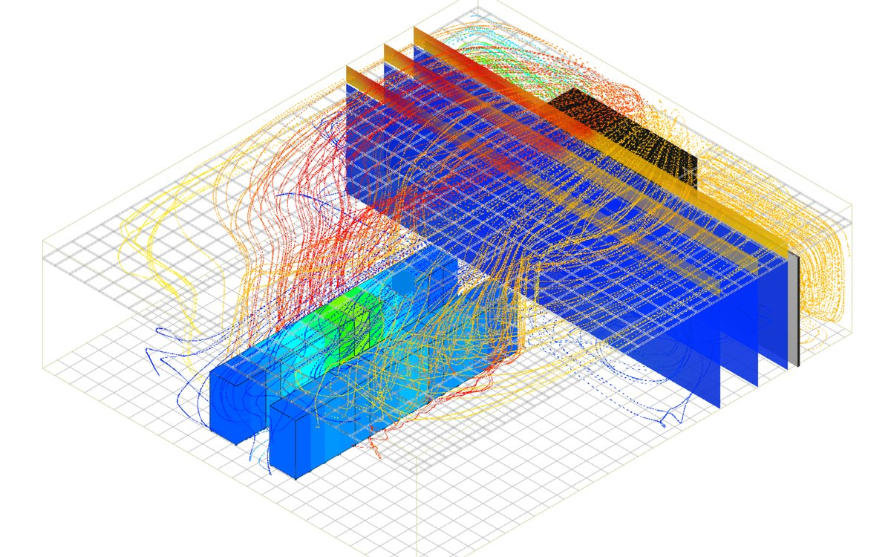
Data-center cooling CFD
Thermal and airflow models for a 160 MW AI data-center campus, and a fidelity study to find the cheapest model that still matched the detailed one.
- 160 MW campus
- 600 kW unit
- ±5% tolerance
- ~50 kW/rack
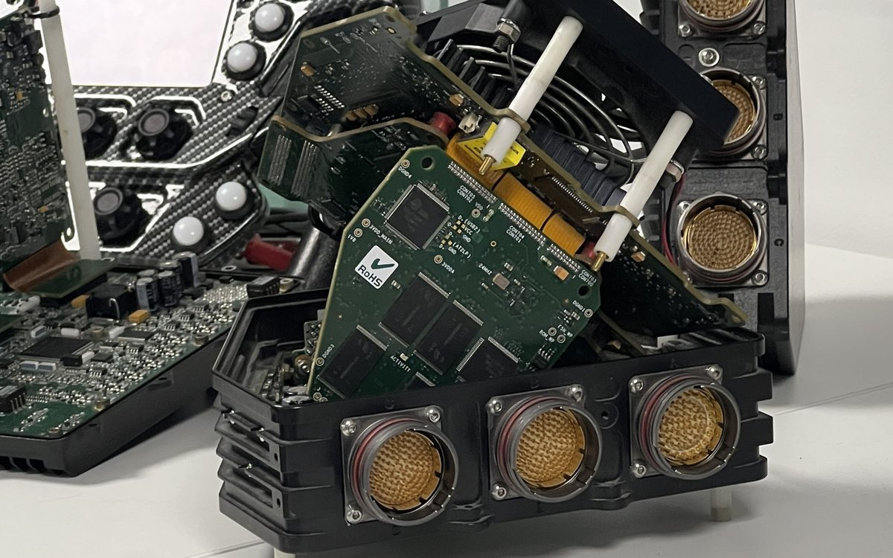
Formula 1 ECU validation
Validation workflows and test cases for the TAG-700, the standard ECU on every 2026 Formula 1 car, plus work on a trackside diagnostics rig.
- TAG-700 ECU
- 12+ test cases
- 4 test areas
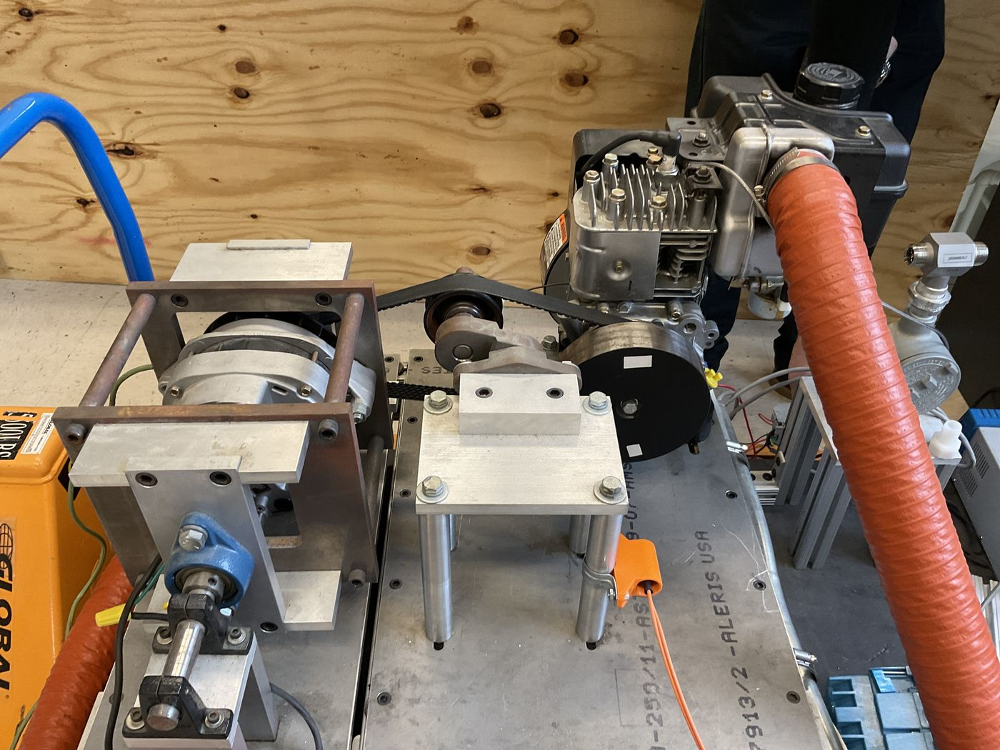
Engine misfire diagnosis
Python processing of in-cylinder pressure data, three tests that traced a flat PV loop to misfiring combustion, and a redesign of the lab rig.
- 0/12 burns passed
- 3 tests
- Python

Low-cost thermoelectric fridge
A Peltier-cooled fridge for low-income households in Bangladesh, tested against six requirements. In a team of four, I built the box and wired the electronics.
- 3 of 5 targets met
- 1.49 ft³
- 2+ h off-grid hold
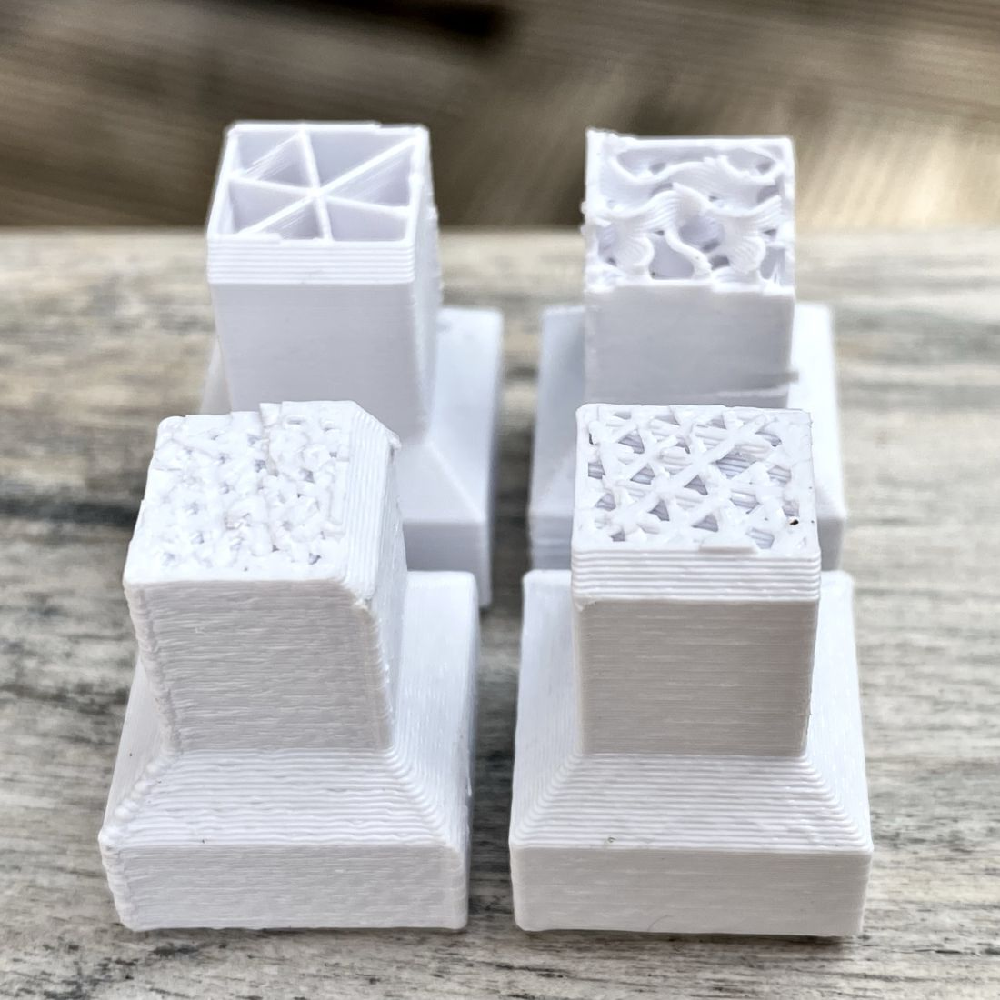
Optimizing 3D printing for space
With a partner, tested 30 print settings for strength per gram, on rigs we built ourselves, including a hand-made Charpy impact tester.
- 30 settings
- 3 load tests
- 90+ hours
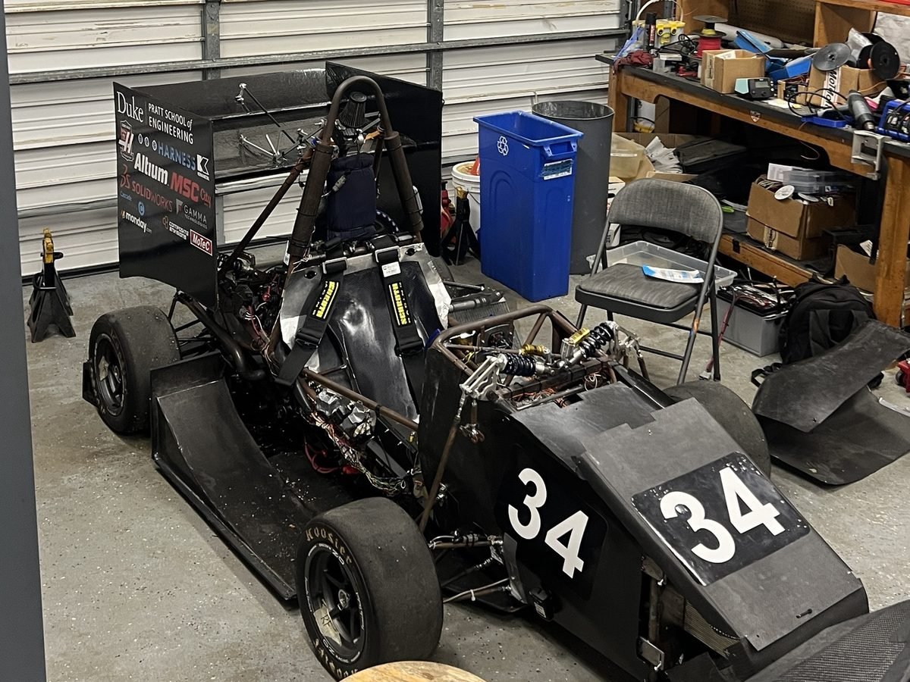
Formula SAE powertrain
Engine calibration, drivetrain setup, and fitting the powertrain together with the chassis and electrical sub-teams.
- Powertrain sub-team
- Car #34
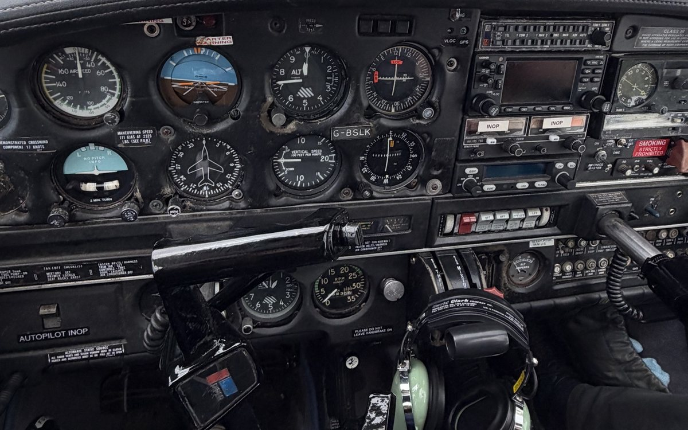
Learning to fly
Training for a UK private pilot’s license in the Cessna 152 and the Piper PA-28 Warrior II. I also hold a UK CAA drone license.
- PPL in training
- 2 aircraft types
- CAA drone license
- Rack-in-a-box cooling rig
- Strain-gauge beam against FEA
- Servo gripper with force sensing
- Propeller thrust stand
- Formula SAE part, drawn and inspected
Skills
- Simulation
- CFD (Cadence Reality DC, formerly 6SigmaDCX)
- Thermal and airflow modeling
- Engine cycle analysis (Brayton, dual cycle)
- PV-loop and misfire analysis
- CAD & making
- SolidWorks
- Onshape
- Fusion 360
- FDM 3D printing
- Electronics & test
- ECU validation
- Test-case design
- CAN bus (PEAK PCAN)
- ATLAS telemetry
- System Monitor
- DAQ instrumentation
- Op-amp filter design
- Lambda sensor calibration
- Materials testing (bend, impact, torsion)
- Code
- Python (signal processing, data analysis)
- MATLAB
- Aviation
- Private pilot’s license in training (Cessna 152, Piper PA-28)
- UK CAA drone license
Experience
Full resume- ADAG Group, MontrealJun–Jul 2026CFD & Design Intern
- McLaren Applied, WokingMay–Jul 2025Motorsport Intern, Systems Engineering
- Duke Motorsports (Formula SAE), DurhamSep 2024–nowPowertrain Engineer
- BAE Systems Submarines, Barrow-in-FurnessOct 2023Engineering Intern
Other things I’ve done
- 2022 to nowSimplexity, founderA student wellbeing platform used by two London schools. It won £10,000 in the Transform Your Society competition. I built the website and surveyed more than 300 students to decide what it should do.
- Jul 2022Explo Summer, AI and machine learning, BostonA three-week course with MIT and McGill instructors. We built convolutional neural networks to classify images, and our team’s model scored the highest accuracy on the final project.
- Dec 2021MIT Introduction to Aerospace (online)An eight-week MIT Open Learning Library course covering rocketry, orbital mechanics, life support and spacewalks.
- 2023House Captain, City of London SchoolChosen by staff to run house events and assemblies and to mentor younger students.
Internship · ADAG Group, Montreal · Jun–Jul 2026
Data-center cooling CFD
Cooling design for a 160 MW AI data-center campus at a Montreal engineering consultancy, reporting to the Director of Technical Excellence.
- Status
- Completed
- Role
- CFD & Design Intern
- Software
- Cadence Reality DC
- Dates
- Jun–Jul 2026
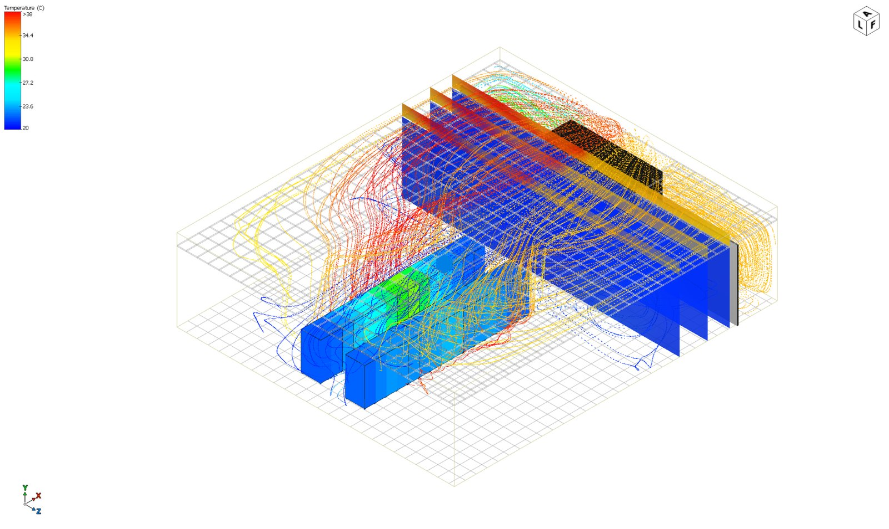
The problem
GPU racks put out far more heat than the servers most data halls were designed around, so the cooling has to be modeled before anything is built. Full-detail CFD of a whole campus is slow to set up and solve, so the useful question is how much detail each model actually needs.
What I did
- Learned Cadence Reality DC from scratch, then built and solved full thermal and airflow models of the campus.
- Ran a three-tier fidelity study on a 600 kW fan wall cooling unit, modeling it at three levels of detail and comparing each with the high-fidelity result.
- Compared the tiers on rack-inlet temperatures, temperature profiles 1, 5 and 10 ft from the supply face, cold-aisle velocity and external static pressure, with solve time as the cost. Then picked the cheapest model that stayed within ±5%.
- Modeled a rear-door heat exchanger for GPU racks at about 50 kW per rack.
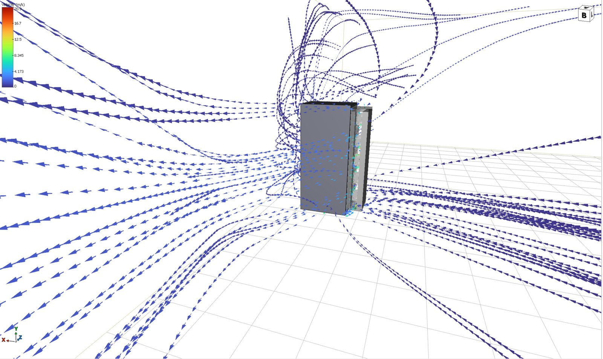
Trade-offs
Detail against cost. A simpler model is only worth using if it gives the same answer as the detailed one, within a set tolerance.
Heat rejection against pressure drop. A denser rear-door coil removes more heat, but it adds air-side pressure drop that the server fans have to overcome.
- Campus
- 160 MW AI data center
- Cooling unit studied
- 600 kW fan wall
- Fidelity tiers
- 3
- Tolerance
- ±5%
- Rack density modeled
- ~50 kW per rack
- Software
- Cadence Reality DC (formerly 6SigmaDCX)
Internship · McLaren Applied, Woking · May–Jul 2025
Formula 1 ECU validation
Validation work on the TAG-700, the standard engine control unit on every 2026 Formula 1 car: test cases, validation workflows and an early trackside diagnostics rig.
- Status
- Completed
- Role
- Motorsport Intern, Systems Engineering
- Hardware
- TAG-700, PCU-700
- Dates
- May–Jul 2025
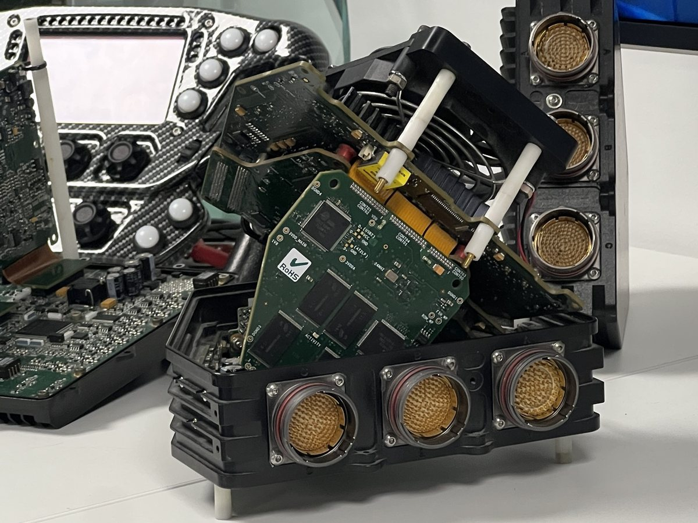
Context
McLaren Applied’s motorsport business, now called Motion Applied, describes the TAG-700 as managing internal combustion, MGU-K, chassis and driver functions on all 2026 Formula 1 cars. It also runs in leading WEC hypercar programs.
What I did
- Built ECU validation workflows for the TAG-700 and calibrated lambda sensors on a Bosch emulator.
- Designed 12+ test cases for the TAG-700 and PCU-700 across several vehicle programs, covering fault detection, UI, voltage and timekeeping.
- Configured high-frequency telemetry in ATLAS for performance diagnostics.
- Helped build an early version of Human-in-the-Loop, a briefcase-sized trackside rig for diagnosing ECUs, using PEAK PCAN, System Monitor and Control Panel.
On the bench
ECUs are mostly tested on hardware-in-the-loop rigs: the real ECU wired to a rack that stands in for the car’s sensors and loads, so it can be tested without a car.
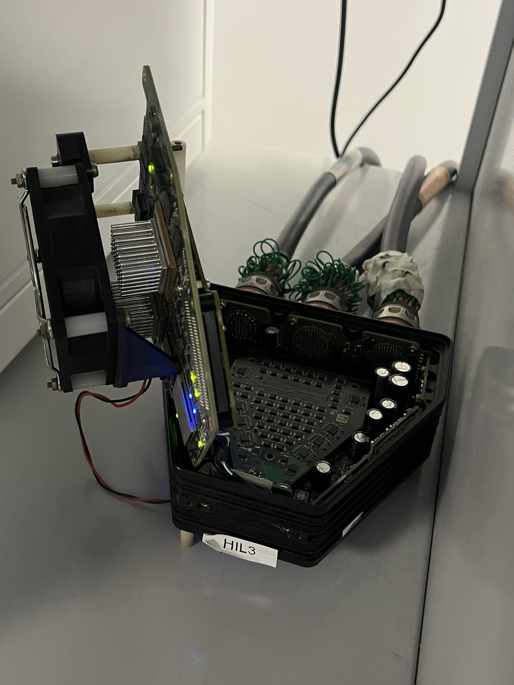
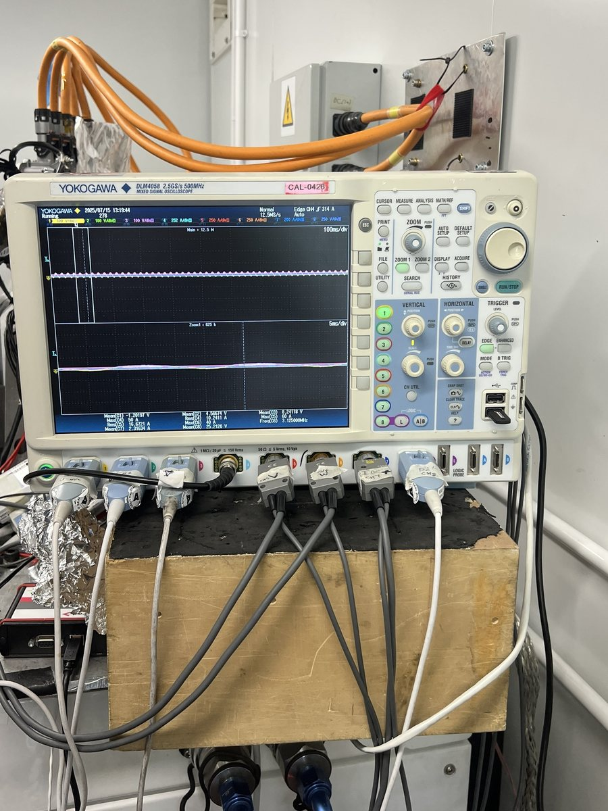
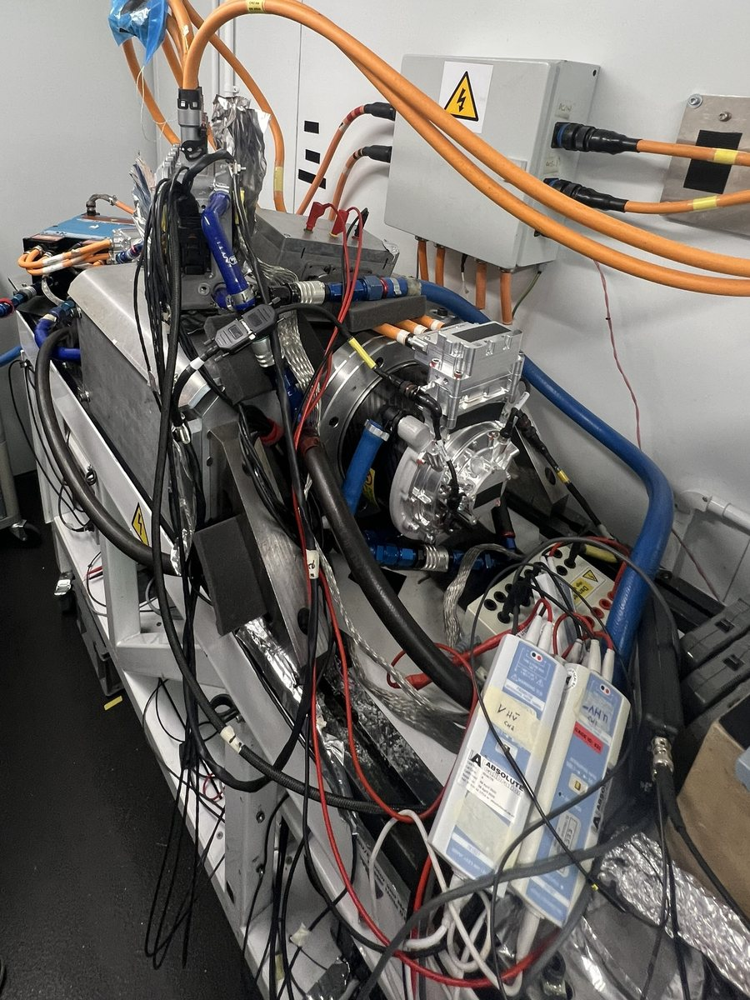
- ECU
- TAG-700
- Also tested
- PCU-700
- Test cases designed
- 12+
- Test areas
- Fault detection, UI, voltage, timekeeping
- Tools
- ATLAS, PEAK PCAN, System Monitor, Control Panel, Bosch emulator
Coursework · ME 331 engine lab, team of three · Spring 2026
Engine misfire diagnosis
Duke’s thermodynamics lab runs a small single-cylinder engine so students can compare a measured PV loop with the ideal Otto cycle. Ours came out flat. I worked on the Python processing and the diagnosis that showed why, and our team proposed changes to the rig.
- Status
- Completed
- Course
- ME 331, Duke
- Team
- Three students
- My part
- Python analysis, misfire tests, intake adapter CAD
The problem
The lab gives you two signals: cylinder pressure and a tachometer pulse. From those you rebuild cylinder volume, plot the PV loop and compare it with an ideal Otto cycle. Our loops had no sharp pressure rise at top dead center, and the area inside them, which is the indicated work, was a fraction of the ideal.
From two signals to a PV loop
- Found each combustion peak in the pressure trace with SciPy’s peak finder. The spacing gave 2,786 rpm, within 0.3% of the tachometer’s 2,778 rpm.
- Converted time to crank angle, then to piston position with the slider-crank relation, then to cylinder volume using the bore and clearance volume.
- Integrated pressure over volume around each cycle and averaged the cycles to get indicated work.
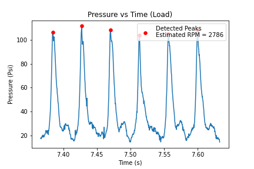
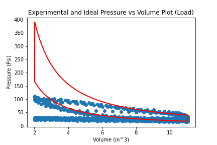
Three tests, one answer
A flat loop can come from bad combustion or from bad measurement, so we checked the combustion three separate ways.
-
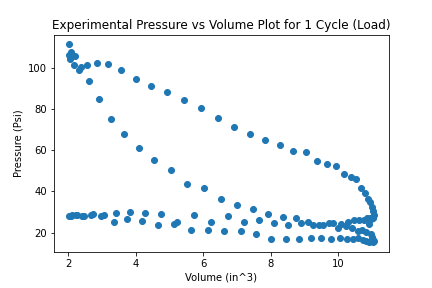
Shape against the ideal cycle
There is no constant-volume pressure spike at top dead center. Pressure climbs slowly and stays high into the expansion stroke, which looks more like a Diesel cycle’s constant-pressure burn than an Otto cycle.
No spike at TDC -
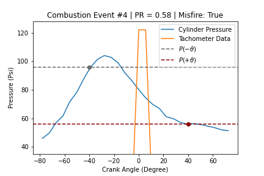
Pressure-ratio misfire test
Following a method from Cesario et al., we compared the pressure 40° after top dead center with the pressure 40° before it. A healthy burn keeps that ratio above 1. This event scored 0.58.
0 of 12 events passed -
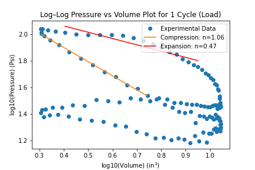
Polytropic exponents
On log-log axes, compression and expansion should be straight lines with exponents near 1.3 to 1.4. Compression gave 1.06, close to isothermal, so the charge wasn’t heating as it should. Expansion gave 0.47: pressure fell more slowly than isentropic, as it would if fuel kept burning late into the stroke.
n = 1.06 and 0.47
Likely causes
- Too little air. A partly open throttle or a closed choke makes the mixture rich and the burn incomplete. We saw dense exhaust and soot in the intake during testing.
- An aging sensor. The Optrand pressure sensor is rated for 1 to 3 years, and the rig has been in use for at least 7, so its calibration was in doubt too.
Redesigning the rig
The rig could only produce PV plots, so we proposed four additions:
- An intake manifold adapter, modeled in CAD, so the lab’s Omega flow meter can measure airflow again.
- Fuel flow measured over a timed run, in place of a sight-glass reading.
- A crank encoder, so volume comes from measured crank angle instead of timing between two tape marks.
- A load cell on the alternator frame, with an adjustable field supply, to measure brake torque.
We also wrote two new experiments for the course. One follows energy from fuel to indicated, brake and electrical power, with an entropy-generation estimate. The other sweeps the air-fuel ratio across throttle positions.
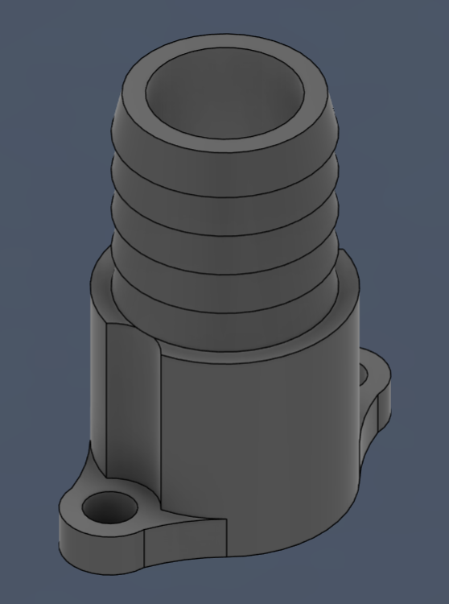
What I’d do differently
- Set the choke and throttle before logging, and wait until peak pressure stops rising. The handout specified neither, and both of our runs suffered for it.
- Check that the pressure sensor reads atmospheric with the engine stopped, before every run.
- Measure crank angle directly rather than inferring it from cycle timing.
Plots are from our team’s report, made in Python.
- Engine
- Briggs & Stratton 3.5 hp, single cylinder, four-stroke
- Displacement
- 148 cc (9.0 in³)
- Test speed
- About 2,780 rpm
- Sensors
- Optrand in-cylinder pressure, flywheel tachometer
- Analysis
- Python (NumPy, SciPy, pandas, Matplotlib)
- Finding
- 0 of 12 combustion events passed the misfire test
Coursework · EGR 101, Duke’s first-year design course · Team of four · 2024–25
Low-cost thermoelectric fridge
A cheap, portable fridge for low-income households in Bangladesh. Our team of four set six requirements, built the fridge from plywood, foam and a thermoelectric cooler, and tested it. I built the box and wired the electronics. It met three of the five requirements we tested.
- Status
- Completed
- Team
- Four students
- My part
- Built the box, wired the electronics
- Result
- 3 of 5 tested targets met


The brief
Refrigeration is out of reach for many low-income households in Bangladesh. We set out to build a fridge that is cheap to make, light enough for two people to carry, and able to keep food cold for a while when the power goes out.
Requirements and results
| Requirement | Target | Result | Status |
|---|---|---|---|
| Cooling | 35–40 °F | 50.2 °F, the lowest steady temperature | Missed |
| Portability | Two people can carry it | 86% of testers were comfortable carrying it with a partner | Met |
| Off-grid hold | Over 45 min without power | Over 2 hours to warm back to room temperature | Met |
| Storage | 5 ft³ or less | 1.49 ft³ | Met |
| Energy use | Under 2.2 kWh a day | 2.7 kWh a day | Missed |
| Durability | 3 months without maintenance | Not tested | Not tested |
How it’s built
I built the box and wired the cooling system: the Peltier module, its fans and the power supply.
- Insulation. A plywood box lined with XPS foam, with the foam seams staggered so air can’t leak straight through.
- Sealing. Tape along every edge to trap air and cut convection, and a lid of wood and XPS with a window seal around it.
- Cooling. A thermoelectric (Peltier) module between two heat sinks. The inside sink and fan pull heat out of the box, and the outside sink and fan dump it into the room.
Why it stopped at 50 °F

The fridge fell from about 65 °F to 50.2 °F in two hours, then leveled off about 10 °F short of the target. With the power off it took more than two hours to warm back to room temperature, so the insulation was doing its job. The limit was the cooling module. A Peltier moves less heat as the temperature difference across it grows, and ours ran out of headroom around 50 °F.
It also used 2.7 kWh a day, about 110 W on average, against a 2.2 kWh target.
What we’d change
- Cool the Peltier’s hot side better. A cooler hot side lets the cold side go colder with the same module.
- Cascade two modules, so one cools the hot side of the other. That reaches lower temperatures but uses more power, and we had already missed the energy target.
- Run the three-month durability test, the one requirement we didn’t test.
Gallery


- Cooling
- Thermoelectric (Peltier) module, heat sinks and fans
- Storage
- 1.49 ft³
- Lowest temperature
- 50.2 °F, down from about 65 °F in 2 hours
- Energy use
- 2.7 kWh a day
- Off-grid hold
- Over 2 hours to warm to room temperature
- Materials
- Plywood, XPS foam, window seal, tape
- My part
- Box build, electronics and wiring
- Course
- EGR 101, Duke’s first-year design course; team of four
School project · CREST Gold Award · 2023–24
Optimizing 3D printing for use in space
With a partner, I tested how 3D printer settings change a part’s strength per gram, with tools printed in orbit as the end use. We designed the samples, built our own test rigs and tested 30 print settings. The project earned a CREST Gold Award from the British Science Association.
- Status
- Completed
- Award
- CREST Gold
- Team
- Two people
- Time
- 90+ hours
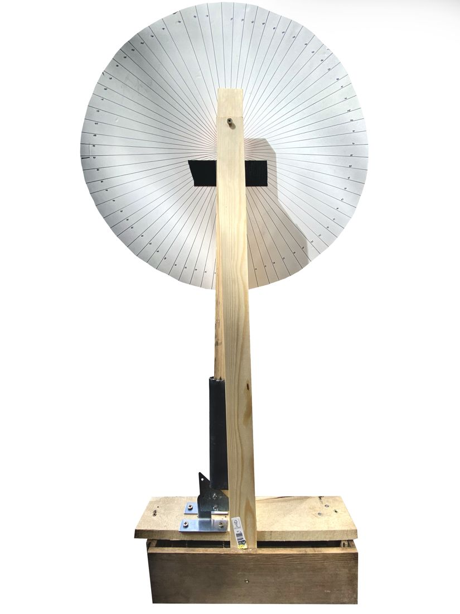
The problem
Every spare tool sent to space costs launch mass. Printing tools in orbit means carrying only raw material, but only if the printed parts are strong enough. NASA has been 3D printing in orbit since 2014, with parts close in strength to the same parts printed on the ground.
What we did
- Picked the loads a hand tool sees: torsion (a wrench), bending (a lever) and impact (a hammer).
- Tested 30 settings across 7 variables, one variable at a time: infill type, infill density, layer height, print temperature, line width, number of walls and orientation. Testing every combination would have meant millions of samples.
- Printed in PLA+ rather than ABS, which gives off toxic fumes when melted.
- Designed the samples in CAD, reworked the torsion sample until it broke cleanly in the middle every time, and notched the impact sample so it broke in the same place.
- Switched from a 3-point to a cantilever bend test, because we couldn’t apply enough force by hand to break samples in 3-point bending.
- Filmed every test in slow motion and read breaking angles against a protractor, timing fractures to the nearest 0.004 s.
- Stored samples with silica gel, since damp PLA turns brittle and would have made early prints weaker than late ones.
Findings
- Layer orientation alone nearly doubled impact energy, from 3.2 J to 6.3 J, when the layers ran perpendicular to the strike.
- Two walls gave the best strength per gram in torsion and impact. Extra walls added mass faster than strength.
- Raising print temperature from 190 °C to 220 °C tripled the torsion breaking angle, from 7° to 22°. Impact energy fell as temperature rose, from 6.3 J at 190 °C to 2.0 J at 230 °C, and bending didn’t change.
- Above about 50% infill, more infill added mass without much gain in impact strength per gram.
Explore the results
Every setting we tested, from our data tables. Pick a setting and a load. A higher breaking angle means a stronger sample, and the best result in each view is shown in orange.
Torsion peaked at 220 °C. Impact energy fell as temperature rose, the opposite of our prediction. Bending barely changed.
Torsion and bending were compared by breaking angle rather than force, so they rank settings rather than give absolute strengths.
What I’d do differently
- Repeat every measurement. Without repeats we couldn’t tell a real trend from an anomaly.
- Record how each sample failed. A tool that bends before it breaks warns the user; one that snaps doesn’t.
- Measure force as well as angle, test a third orientation, and test real tool shapes alongside standard samples.
The next step we proposed was slicing software that picks print settings from a part’s expected loads and the material available.
Gallery
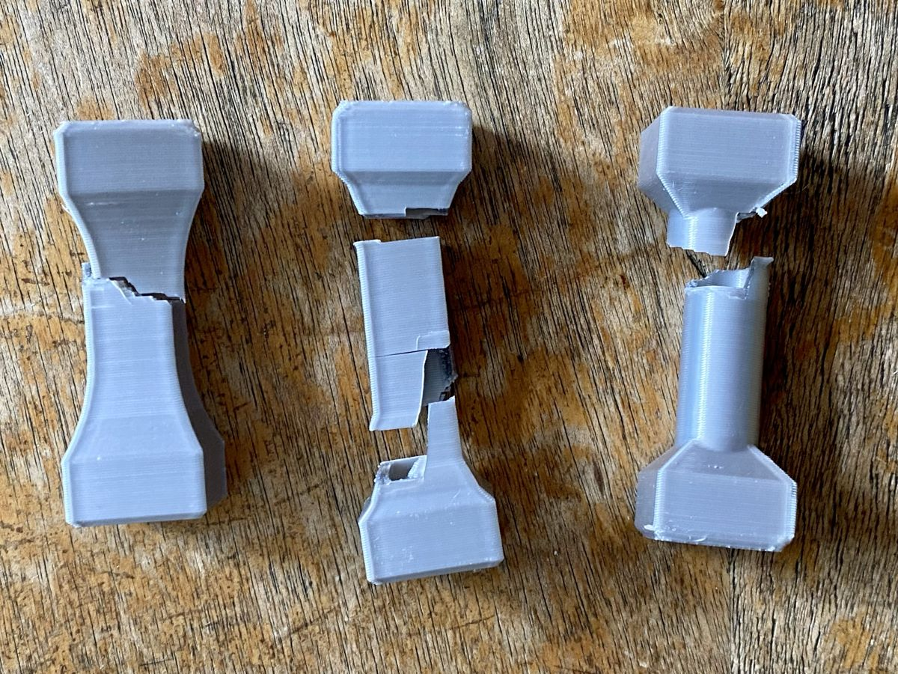
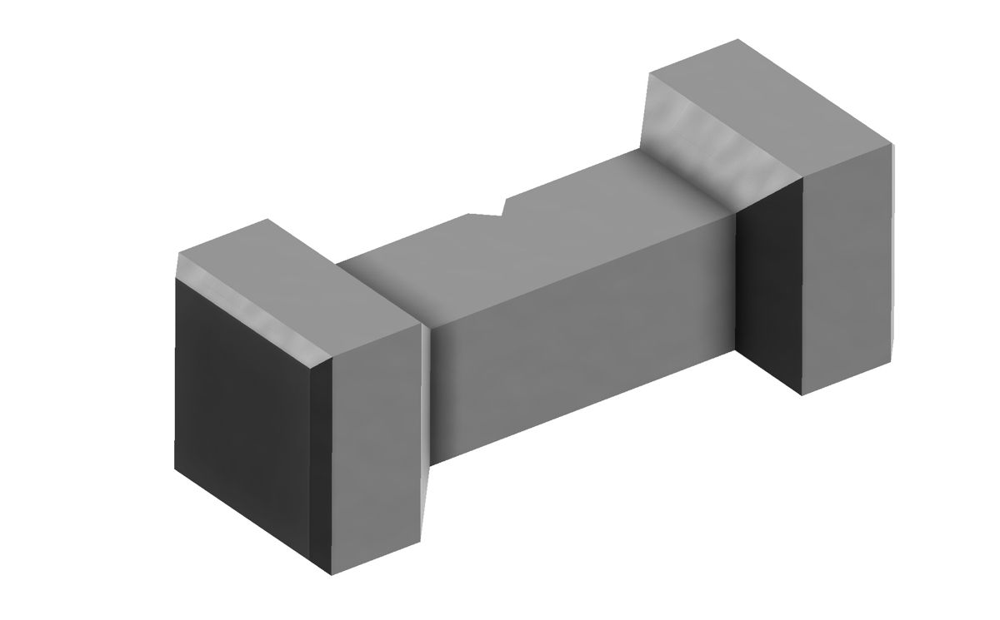
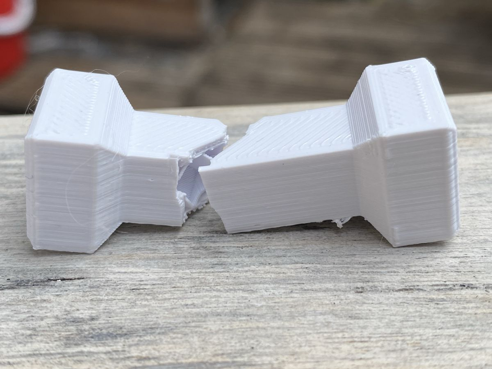
- Material
- PLA+
- Variables
- 7
- Settings tested
- 30
- Tests
- Torsion, cantilever bend, Charpy impact
- Measurement
- Breaking angles from slow-motion video
- Award
- CREST Gold, British Science Association
Team · Duke Motorsports (Formula SAE) · Sep 2024 to now
Formula SAE powertrain
I’m a powertrain engineer on Duke’s Formula SAE team.
- Status
- Ongoing
- Role
- Powertrain Engineer
- Team
- Duke Motorsports
- Since
- Sep 2024
What I do
- Calibrate the engine and configure the drivetrain to improve powertrain performance.
- Integrate powertrain components with the chassis and electrical sub-teams ahead of competition.
On the stands
Next
Planned Spring 2027: design, make and inspect one powertrain part, with a GD&T drawing to ASME Y14.5 and a first-article inspection.
- Sub-team
- Powertrain
- Work
- Engine calibration, drivetrain setup, integration
- Works with
- Chassis and electrical sub-teams
- Car
- #34
Personal · Flight training, UK
Learning to fly
I’m training for a UK private pilot’s license in two classic trainers: the high-wing Cessna 152 and the low-wing Piper PA-28 Warrior II.
- Status
- In training
- License
- UK private pilot’s license (PPL)
- Aircraft
- Cessna 152, Piper PA-28
- Also
- UK CAA drone license
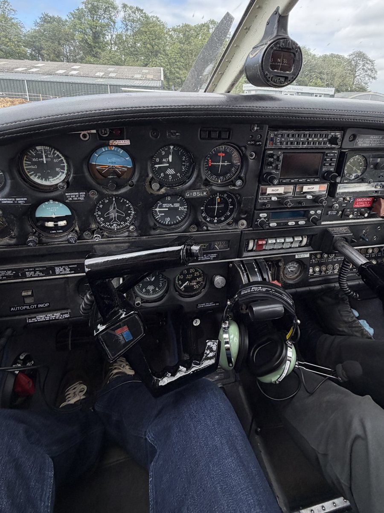
Two trainers
| Cessna 152 | Piper PA-28-161 Warrior II | |
|---|---|---|
| Wing | High, strut-braced | Low, cantilever |
| Seats | 2 | 4 |
| Engine | Lycoming O-235, 110 hp | Lycoming O-320, 160 hp |
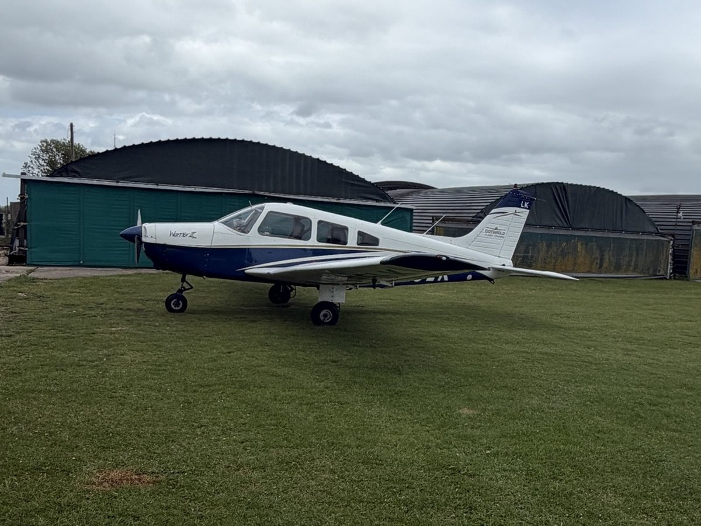
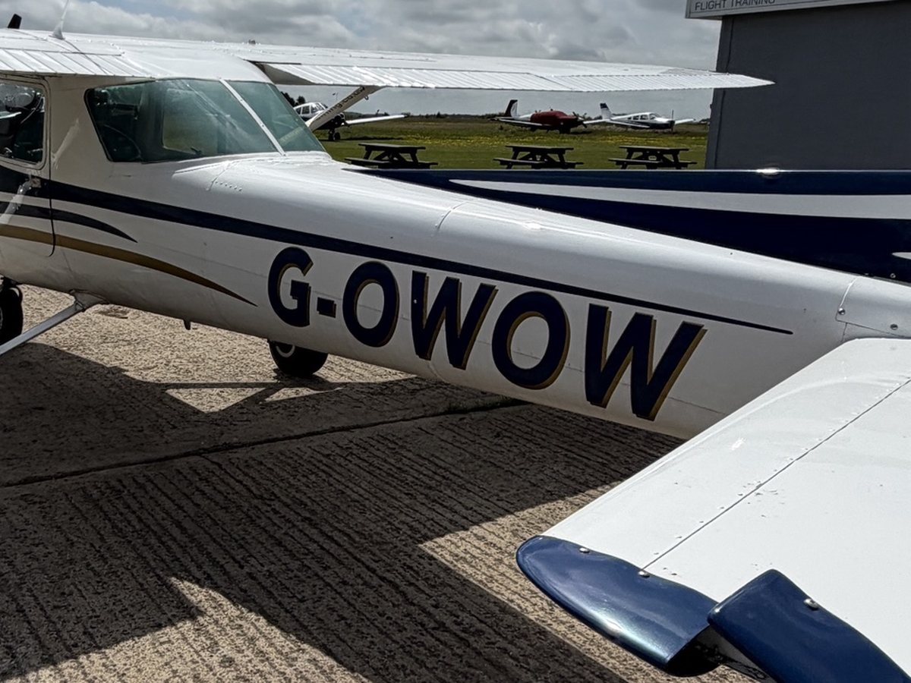
- Training
- UK private pilot’s license, in progress
- School
- Cotswold Flight Training
- Aircraft flown
- Cessna 152; Piper PA-28-161 Warrior II
- Drones
- UK CAA drone license
Planned work · Oct 2026 to spring 2027
Build queue
Builds I’m planning over the next few months. Most of them test a prediction against a measurement. Each one moves to Projects once it exists.
-
Planned · Sydney, Oct–Dec 2026
Rack-in-a-box cooling rig
A small enclosure with a heater block standing in for a server, two PC fans under PID control and a few thermocouples. I’ll predict the temperatures by hand and in CFD first, then measure. A desk-scale version of the problem I worked on at ADAG.
- Measures
- Inlet and outlet temperature, fan speed, heater power
- Shows
- Instrumentation, PID control, model validation
-
Planned · with the CSWA
Strain-gauge beam against FEA
An aluminum cantilever with a strain gauge and bridge amplifier, loaded with known weights and compared with hand calculations and SolidWorks Simulation.
- Measures
- Strain and deflection against load
- Shows
- CAD, FEA, strain measurement
-
Planned
Servo gripper with force sensing
A two-finger gripper that closes until it reaches a set force, with a force sensor in the control loop.
- Measures
- Grip force, response time
- Shows
- Mechanism design, closed-loop control
-
Idea
Propeller thrust stand
A load cell, current sensor and tachometer for small drone motors, to compare measured thrust and efficiency with momentum theory.
- Measures
- Thrust, electrical power, RPM
- Shows
- Propulsion testing, DAQ
-
Planned · Duke, spring 2027
Formula SAE part, drawn and inspected
One powertrain part designed, drawn to ASME Y14.5, made and inspected, as an independent study.
- Measures
- As-built dimensions against the drawing
- Shows
- GD&T, manufacturing, inspection
About
Cole Matthews
I’m a mechanical engineering student at Duke University, graduating in May 2028 with a certificate in aerospace engineering. I went to school in London, and I’m spending this autumn at UNSW in Sydney.
I’m most interested in hardware: aircraft, propulsion, and the thermal and electrical systems around them. My two internships came at that from different ends. At McLaren Applied I tested the electronics that run Formula 1 engines. At ADAG Group I modeled how a data-center campus gets rid of its heat.
I’m training for my private pilot’s license and hold a UK CAA drone license. I’m a student affiliate of the Royal Aeronautical Society and a member of the Vertical Flight Society.
At school, a partner and I earned a CREST Gold Award from the British Science Association for testing 3D-printed parts for use in space. Before university I also founded Simplexity, a student wellbeing platform used by two London schools. It won £10,000 in start-up funding in the Transform Your Society competition.
Outside engineering: skiing, Chelsea, travel and trying new food.
- Cole.Matthews@duke.edu
- Based
- Durham, NC and London
- Recognition
- CREST Gold Award (2024); Senior British Physics Olympiad Silver Medal (2023); Ivy House Leadership Development Award (2023); Transform Your Society winner, £10,000 grant (2022); Lord Mayor’s Prize for GCSE results (2022)
Resume · PDF on request
Resume
Education
- Coursework: Thermodynamics, Fluid Mechanics, Dynamics, Mechatronics, Differential Equations; Controls (Spring 2027).
- Labs: engine cycle analysis (Brayton, dual cycle), spring-pendulum dynamics, op-amp filter design, DAQ instrumentation.
- Study abroad: UNSW Sydney, Aug–Dec 2026.
- GCSEs: 10 at grade 9/A*; Lord Mayor’s Prize for GCSE results (2022).
Experience
- Learned Cadence Reality DC (data-center CFD software) from scratch, then built and solved full thermal and airflow models for a 160 MW AI data-center campus.
- Ran a three-tier CFD fidelity study of a 600 kW fan wall cooling unit, setting ±5% tolerances to find the lowest-cost model that reproduced the high-fidelity result.
- Modeled a rear-door heat exchanger for GPU racks at ~50 kW/rack, trading heat rejection against air-side pressure drop.
- Built ECU validation workflows for the TAG-700, the standard ECU on every 2026 Formula 1 car; calibrated lambda sensors on a Bosch emulator.
- Designed 12+ TAG-700 and PCU-700 test cases across multiple vehicle programs: fault detection, UI, voltage and timekeeping.
- Configured high-frequency telemetry in ATLAS for performance diagnostics.
- Helped build an early version of Human-in-the-Loop, a briefcase-sized trackside ECU diagnostics rig, using PEAK PCAN, System Monitor and Control Panel.
- Calibrate the engine and configure the drivetrain to improve powertrain performance.
- Integrate powertrain components with the chassis and electrical sub-teams ahead of competition.
- Shadowed engineering and manufacturing teams building the UK’s Dreadnought and Astute-class nuclear submarines.
Selected projects
- Processed in-cylinder pressure data from a 3.5 hp Briggs & Stratton engine in Python (peak detection, crank-angle reconstruction, PV-loop integration) and produced CAD for its intake manifold adapter.
- Ran three misfire tests that traced the flat PV loop to incomplete combustion; 0 of 12 combustion events passed the misfire check.
- In a team of four, built the insulated box and wired the Peltier cooling system of a portable fridge for low-income households in Bangladesh, designed against six requirements including temperature, portability, energy use and off-grid hold time.
- Cooled the 1.49 ft³ box from 65 °F to 50.2 °F in two hours (target 35–40 °F); it took over two hours to warm back up unpowered, which put the shortfall on the Peltier module rather than the insulation.
- Tested 30 3D printer settings across 7 variables in torsion, bending and impact (90+ hours).
- Built a Charpy impact tester from scratch; measured impact energy nearly doubling (3.2 to 6.3 J) with layer orientation.
- Built the website and platform for a wellbeing service used by two London schools, designed around surveys of 300+ students.
- Won £10,000 in start-up funding in the Transform Your Society competition.
Skills and recognition
- Engineering: CFD (Cadence Reality DC), thermal modeling, CAD (SolidWorks, Onshape, Fusion 360), FDM 3D printing, materials testing, ECU validation, engine calibration, CAN bus (PEAK PCAN), ATLAS telemetry, DAQ.
- Software: Python (signal processing, data analysis), MATLAB.
- Aviation: Private pilot’s license in training (Cessna 152, Piper PA-28); UK CAA drone license.
- Recognition: CREST Gold Award (2024); Senior British Physics Olympiad Silver Medal (2023); Ivy House Leadership Development Award (2023).
- Memberships: Royal Aeronautical Society (Student Affiliate); Vertical Flight Society.